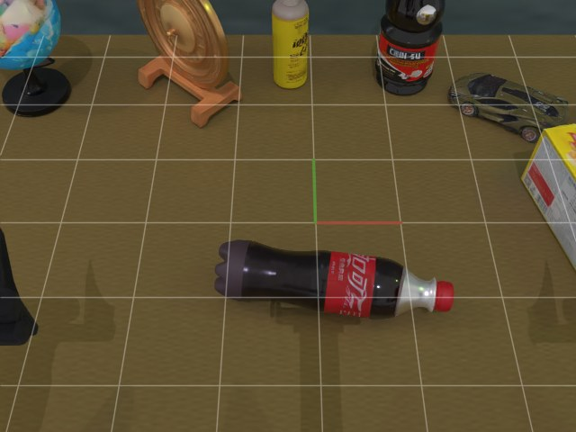

Task manual
Generated before execution
- Instruction
- Lift the bottle with red screw cap from the table using the left arm.
Last updated:
Introduction
DreamX-RoboConductor enables a general-purpose AI agent to perform robotic manipulation through explicit task specifications and a lightweight harness. Codex uses live images, robot state, and execution feedback to select actions and recover from failures, without robot-specific fine-tuning or preprogrammed manipulation skills. The system currently supports RoboTwin simulation and physical Piper robots. Using GPT-6 Astra in a zero-shot setting with no task demonstrations, it achieves 82.2% success across all 50 RoboTwin 2.0 C2R tasks, the highest reported score among the systems compared in our technical report. On Piper, it achieves 80.0% success across 10 tasks and 50 trials, including insertion, pouring, hanging, and stacking.
DreamX-RoboConductor 通过明确的任务规格和轻量级运行框架，让通用 AI 智能体完成机器人操作。Codex 利用实时图像、机器人状态和执行反馈选择动作，并从失败中恢复，无需针对机器人微调模型或预编程操作技能。系统目前支持RoboTwin 仿真和 Piper 真机。使用 GPT-6 Astra，在零样本且无任务示范设置下，系统在全部 50 项 RoboTwin 2.0 C2R 任务中取得 82.2% 的成功率，是我们技术报告所比较系统中已报告的最高分数。在 Piper 上，它在10 项任务、50 次试验中取得 80.0% 的成功率，涵盖插入、倾倒、悬挂和堆叠等操作。
Videos
Core results
Loading trials…

| Method | Task data / context | SR (%) |
|---|---|---|
| DreamX-RoboConductor (Codex) | 0-shot | 82.2 |
| GO-3 Nano Preview | Full set | 81.5 |
| PrismWAM* | Full set | 75.5 |
| CloudRobo-WM | Full set | 75.0 |
| RoboDawn (GPT-6 Astra) | 1-shot | 73.6 |
| RoboDawn (Gemini-3.8-Flash) | 1-shot | 62.2 |
| HarnessVLA (Claude Code) | Full set | 58.4 |
| HarnessVLA (Codex) | Full set | 58.0 |
| RoboDawn (GPT-6 Astra) | 0-shot | 53.2 |
| LingBot-VLA | Full set | 50.4 |
| RoboDawn (Gemini-3.8-Flash) | 0-shot | 47.0 |
| π0.5 | Full set | 46.0 |
| X-WAM | Full set | 25.8 |
| X-VLA | Full set | 20.9 |
| GR00T-1.7 | Full set | 20.7 |
| Xiaomi-Robotics-0 | Full set | 18.2 |
| GalaxeaVLA | Full set | 12.7 |
| StarVLA | Full set | 10.6 |
| FastWAM | Full set | 1.9 |
| Setting | Real world · Piper | Simulation · RoboTwin 2.0 |
|---|---|---|
| Platform | Piper, single arm | RoboTwin 2.0, dual-arm |
| Tasks | 10 tasks | 50 tasks |
| Trials | 50 trials | 500 trials |
| Observations | External + wrist cameras | Head + two wrist cameras |
| Agent | GPT-6 Astra · xhigh | GPT-6 Astra · xhigh |
| Scoring | Operator confirmation | Official RoboTwin evaluator |
Anatomy of an episode
Generated before execution

Turn 0Real-world experiments
10 tasks · 40 successes in 50 operator-confirmed trials.
Loading real-world trials…
We plan to further develop the DreamX-RoboConductor harness and directly integrate a broader range of multimodal LLMs to investigate their capabilities in embodied control. We also aim to establish a benchmark and public leaderboard for evaluating multimodal LLMs’ perception of the physical world.
我们计划进一步完善 DreamX-RoboConductor harness，并直接接入更广泛的多模态大语言模型，研究其具身控制能力。我们还将构建基准测试和公开排行榜，评估多模态大语言模型对物理世界的感知能力。